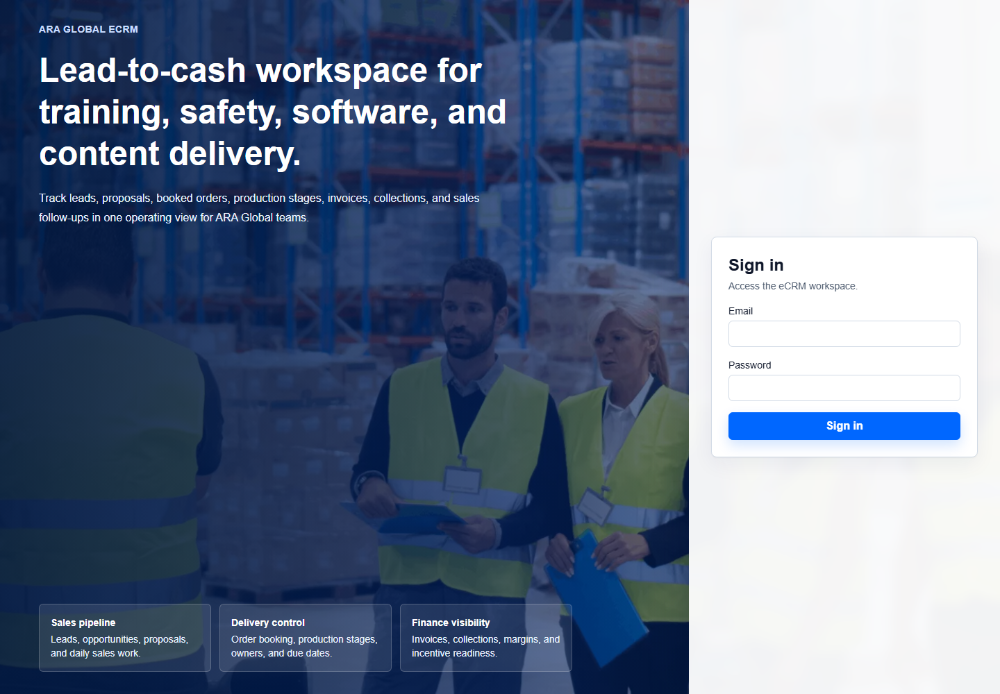
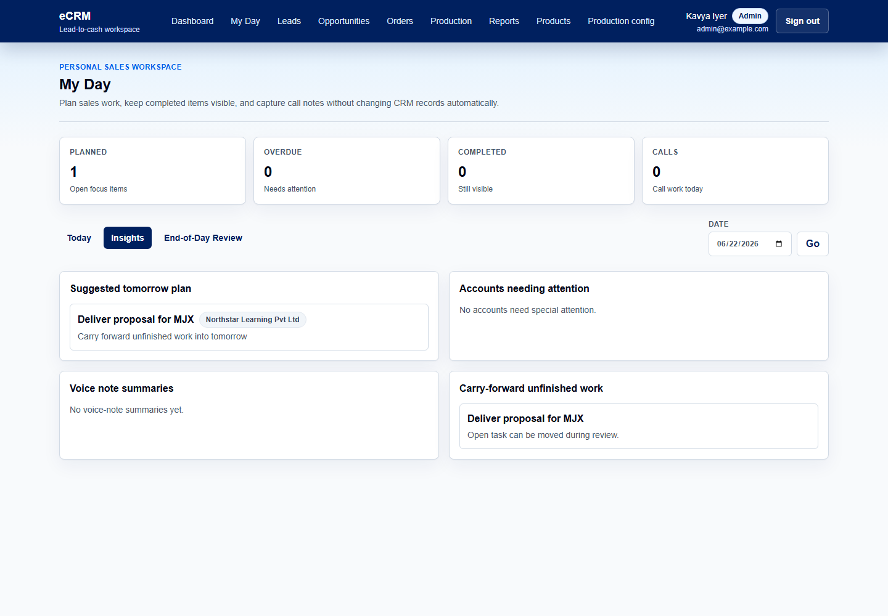
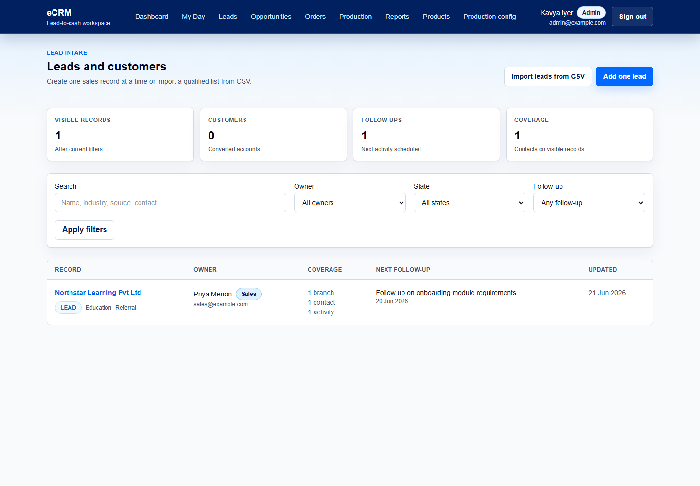
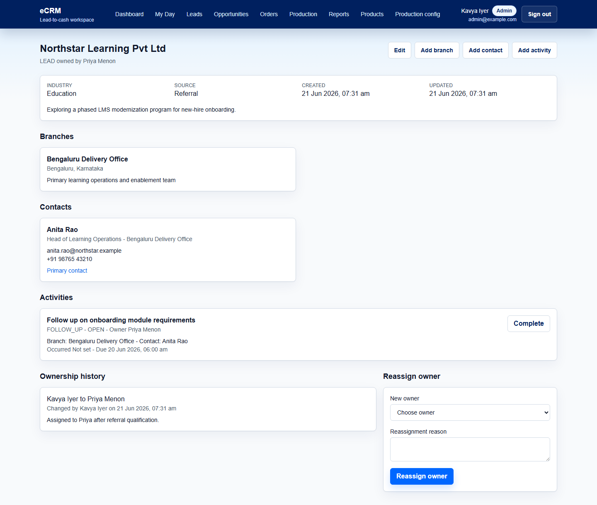
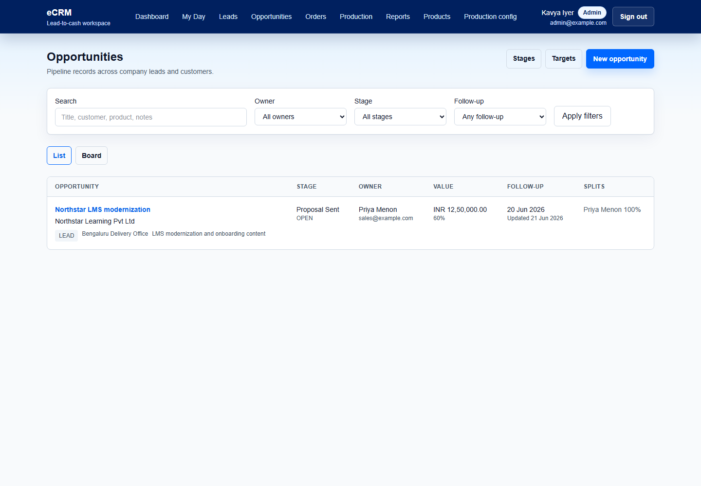
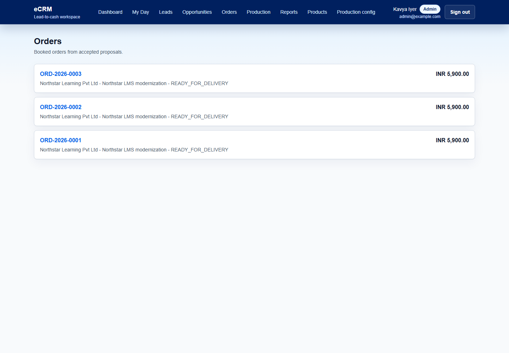
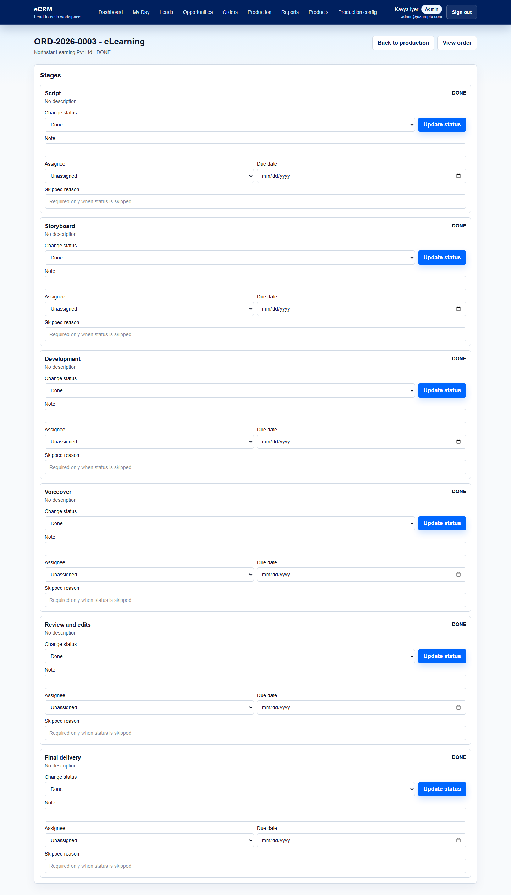
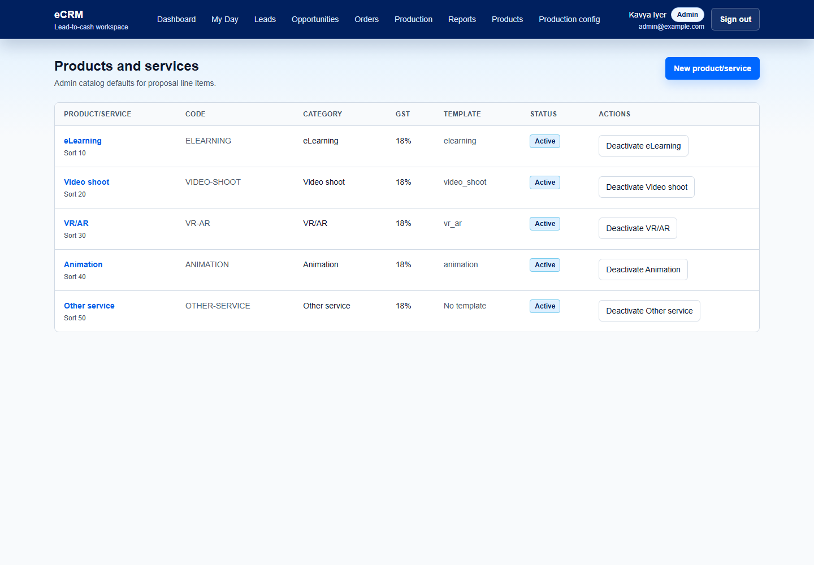
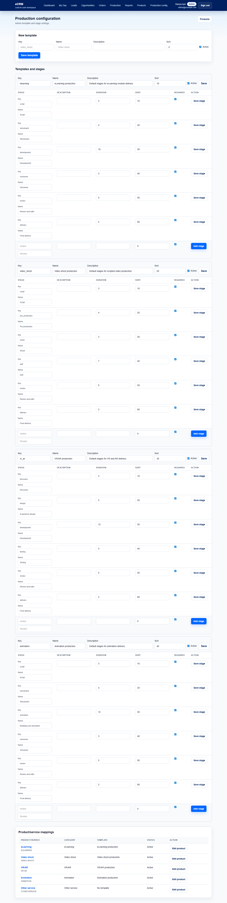

User guide
eCRM Lead-to-Cash Workspace
Practical guide for Admin and Sales users covering sign-in, daily planning, leads, opportunities, proposals, orders, production, finance visibility, reports, and configuration.
1. Getting Started
eCRM is a single-company CRM. Admin and Sales users both see company-wide operating data. Ownership is used for responsibility, filtering, targets, and incentives; it is not used to hide records from other sales users.
Local seeded users: Admin is admin@example.com / Admin@12345. Sales is sales@example.com / Sales@12345.

Main navigation
Sales routes
- Dashboard
- My Day
- Leads
- Opportunities
- Orders
- Production
- Reports
Admin routes
- Products
- Production config
- All Sales routes
2. Dashboard And Reports
The dashboard is the fastest way to see company-wide sales, billing, collection, production, and follow-up metrics.

Use the reports page
- Open Reports from the top navigation.
- Review dashboard metrics at the top.
- Scan top clients, products/services, top billings, collections, recent orders, open pipeline, production pending, and upcoming follow-ups.

3. Plan Sales Work In My Day
My Day is a personal workspace for planning sales work without automatically changing CRM records.

Create a task
- Open My Day.
- Select Today.
- Use the task composer to enter the task, type, priority, due date, and optional linked record.
- Save the task.
Capture a voice note
- Open My Day.
- Use Record voice note.
- Attach it to a task if needed.
- Review playback, transcript, and suggested follow-up actions when available.
Use insights and end-of-day review
Insights suggest tomorrow planning, accounts needing attention, voice-note summaries, and unfinished work. End-of-day review helps move or close work intentionally.

4. Manage Leads And Customer Context
Leads and customers represent company-level account records. They can include branches, contacts, activities, notes, owner history, and reassignment.

Add one lead
- Open Leads.
- Choose Add one lead.
- Enter account details, state, owner, source, industry, and notes.
- Save the record.
Import leads
- Open Leads.
- Choose Import leads from CSV.
- Download or follow the fixed template.
- Upload, review row-level errors, and import valid rows.

5. Opportunities And Proposals
Opportunities track separate sales pursuits under a lead/customer. Proposals belong to opportunities and hold the commercial record.

Create and manage a proposal
- Open an opportunity.
- Use the proposal area to create a new proposal.
- Add commercial summary, assumptions, inclusions, exclusions, payment terms, delivery timeline, and line items.
- Use product/service catalog items so GST defaults and snapshots are stored consistently.
- Add proposal document links for external PDFs and optional Canva designs.
- Move the proposal through status actions such as sent, accepted, rejected, expired, or withdrawn.

6. Orders And Production
Orders are created from accepted proposals. The order stores source proposal context, customer, branch, owner, line items, GST totals, PO metadata, and production summaries.

Book an order from an accepted proposal
- Open the accepted proposal.
- Choose Book order or open an existing order link if one has already been created.
- Enter PO metadata and due dates as needed.
- Confirm the order detail shows preserved commercial snapshots.

Update production stages
- Open Production.
- Open the inline stage controls or a production work item detail page.
- Update stage status, owner, due date, notes, completion, or skipped reason.
- Use the board to scan overall progress by customer and order.

7. Products, Production Templates, And Finance Visibility
Product and service catalog
Admin users manage the product/service catalog. Sales users use active catalog rows when creating proposal line items.

Production configuration
Admin users can manage production templates, template stages, durations, required flags, active status, and product/service mappings.

Finance visibility
Finance data is attached to orders. The model supports invoice records, payments, payment allocations, cost components, gross margin, incentives, split recipients, approval status, overrides, rejection, voiding, and payout metadata. Invoice PDF generation and external accounting sync are not part of the current MVP.